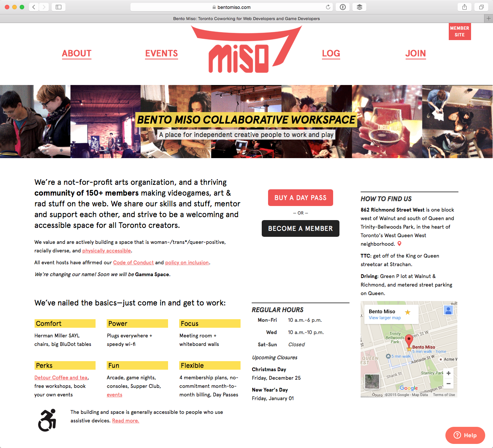
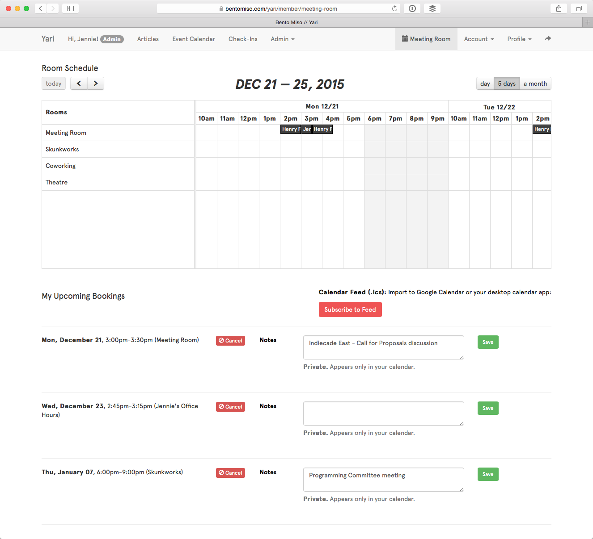
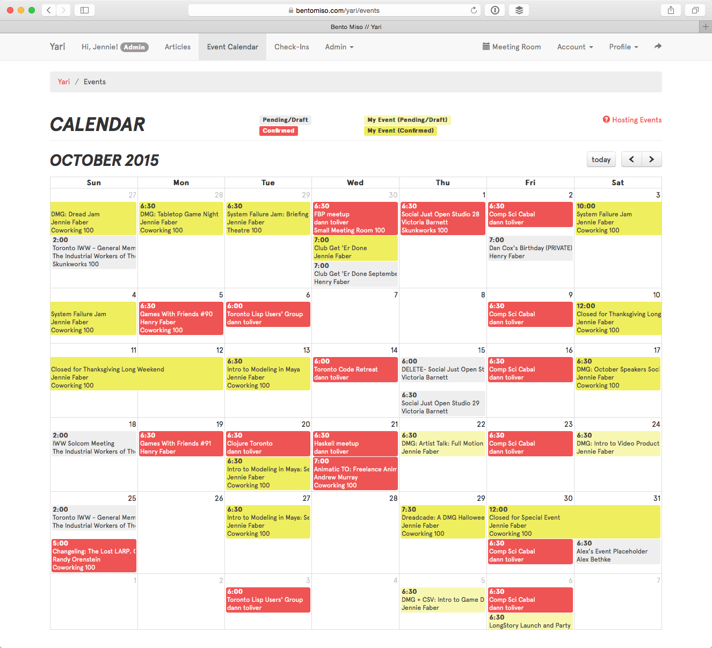

Bento Miso Collaborative Workspace
Solving the problem of filling in many administrative gaps at a tiny non-profit with a physical space and membership to manage, this site allows Bento to provide a holistic user experience, both in the space and through the site, to its members without hiring more staff.
Role
Everything: Prototyping, design, content, data modeling, development and maintenance.
Tech
PHP framework Daimio on MySQL and MongoDB.
Stripe API, Mandrill API, Flickr API.
Features
- Member management system, from application through approval, billing and churn management; member features such as resource bookings, event and ticketing management, skill matchmaker, profile and projects, calendar feeds and more.
- Office manager features like check-ins, approval workflows, helpdesk integration and resource calendars.
- Community features aggregating events, profiles and projects.